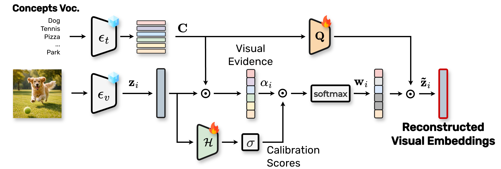

Code
Code
🧩 Concept decomposition
GRACE decomposes the visual embeddings of a frozen Vision-Language Model into a sparse set of human-understandable concepts.
Humans understand the world by decomposing it into atomic semantic abstractions, and natural language enable us to express and compose these abstractions into rich descriptions. Vision–Language Models align their visual representations with this language-based compositional structure, but visual data are complex and encode many tightly entangled concepts, especially in videos, where objects, actions and human motion co-occur and evolve over time. Understanding how VLMs represent this structure is crucial to better understand their predictions, and to building more robust and general models.
Prior works decompose visual embeddings into text-based concepts with instance-level optimization (SpLiCE), or build surrogate representations through the use of external captioning models (EXPLAIN-R). Neither of these approaches leverages the intrinsic concept-based structure of the visual embedding space.
💡 We introduce GRACE, a framework that learns a concept-based decomposition of the visual embedding space. Our approach collects concept evidence directly from the visual input, calibrates it, and reconstructs the embedding from the matched concepts while preserving the global geometry of the original embedding space, ensuring that the relations between samples are preserved. The resulting decomposition is faithful, robust and general, and transfers across tasks, datasets and domains.

The visual embedding is matched against the text embeddings of a large vocabulary of human-understandable concepts by cosine similarity.
A calibration step calibrates the relevance of each concept, keeping only a few per sample, and removing irrelevant or duplicated concepts.
The visual embeddings are reconstructed from the calibrated concept weights. A learnable orthogonal projection Q prevents further entangling of the concepts.
In CLIP and the Perception Encoder the spatial patch embeddings are not text-aligned, which prevents patch-level concept decompositions. In TIPSv2 they are: we train GRACE on its CLS embeddings with the usual objective, then apply the same decomposition to spatial patches at inference time. This allows to detect where each concept is in the image, without any segmentation supervision.
Click a concept to see its patch-level reconstruction weights. The top-3 concepts come from the decomposition of the CLS embedding.
| Model | Avg. ρ / τ |
|---|---|
| Perception Encoder | 51.7 / 36.7 |
| Qwen2.5-VL | 42.5 / 29.6 |
| SpLiCE | 50.9 / 35.4 |
| GRACE | 56.3 / 40.1 |
Average correlation with human similarity judgments: GRACE’s concept weights are the best match with human perception.
| Method | Intra | Inter | Faith. |
|---|---|---|---|
| Perception Encoder | 37.64 | 84.88 | – |
| SpLiCE | 34.60 | 79.04 | 70.36 |
| EXPLAIN-R | 30.10 | 76.17 | 63.70 |
| GRACE | 35.43 | 81.35 | 77.86 |
Trained on EgoClip, evaluated zero-shot. GRACE produces the most faithful reconstructions without per-sample optimization.
| Method | ImageNet | Flowers102 |
|---|---|---|
| CLIP ViT-B/32 | 61.92 / – | 63.39 / – |
| SpLiCE | 42.91 / 51.33 | – / 26.12 |
| EXPLAIN-R | 50.77 / 50.19 | 15.51 / 16.59 |
| GRACE | 48.04 / 60.15 | 32.14 / 41.78 |
Acc. / Faith. on ImageNet and Flowers102. The model is trained on ImageNet but transfers well across domains.
We split the ImageNet classes into five folds that minimize the concept overlap between training and test classes, train GRACE on the 800 training classes of each fold and test it zero-shot on the 200 held-out ones.
Most activated concepts, averaged over the images of a class, reveal what the model associates with it.
Strong entity–location correlations (volcanoes → Chile, Indonesia; rickshaws → Tokyo), and “casio g” often fires for devices with a digital display, even when they are not watches.
@inproceedings{peirone2026grace,
title = {A General Concept-based Decomposition for Vision-Language Embeddings},
author = {Peirone, Simone Alberto and Senouf, Ortal and Pistilli, Francesca and Averta, Giuseppe and Frossard, Pascal},
booktitle = {Advances in Neural Information Processing Systems},
year = {2026}
}
This study was carried out within the FAIR - Future Artificial Intelligence Research and received funding from the European Union Next-GenerationEU (PIANO NAZIONALE DI RIPRESA E RESILIENZA (PNRR) – MISSIONE 4 COMPONENTE 2, INVESTIMENTO 1.3 – D.D. 1555 11/10/2022, PE00000013). This manuscript reflects only the authors’ views and opinions, neither the European Union nor the European Commission can be considered responsible for them. We acknowledge the CINECA award under the ISCRA initiative, for the availability of high performance computing resources and support.